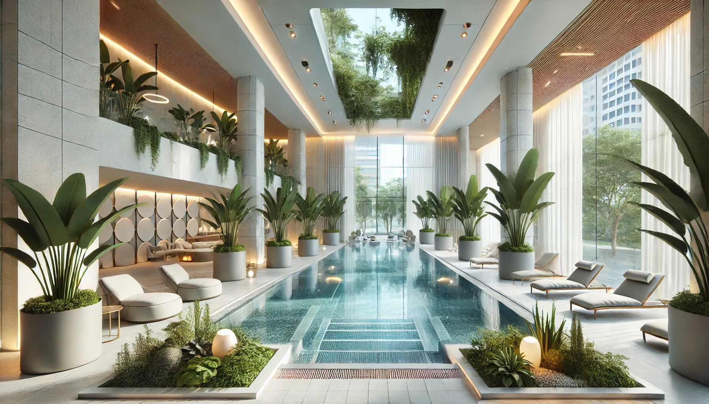

Becken
Erholung unter Dach und Fach – unser Innenbecken lädt ein!
In unserem großzügigen Innenbereich können Sie sich bei angenehmen Temperaturen entspannen und das wohltuende Thermalwasser in vollen Zügen genießen. Ob bei ruhigem Treibenlassen oder aktivem Schwimmen – unser Innenbecken bietet die perfekte Kombination aus Entspannung und Bewegung. Das elegante Ambiente und die beruhigende Atmosphäre machen jeden Besuch zu einem besonderen Erlebnis, gerade an kühleren Tagen.


Schwimmen unter freiem Himmel
Genießen Sie die frische Luft und die Freiheit unter freiem Himmel in unserem großzügig gestalteten Außenbad. Unsere Anlage bietet optimale Bedingungen für Schwimmbegeisterte, egal ob Sie Ihre Kondition verbessern, Technik trainieren oder einfach entspannt Ihre Bahnen ziehen möchten.